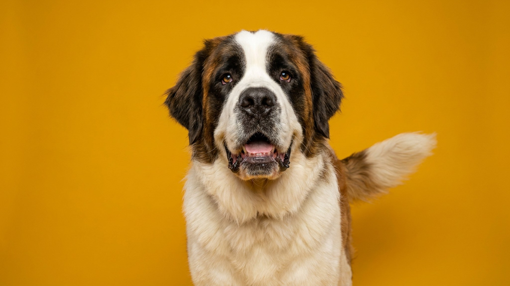

Сенбернар может весить 90 кг — и при этом аккуратно укладывать голову на колени ребёнку, не сбив его с ног. Это порода, где размер и мягкость существуют вместе. Но именно размер определяет почти всё: жильё, режим, питание, здоровье. Ниже — честный разбор для тех, кто думает о сенбернаре серьёзно.
Сенбернар — одна из крупнейших пород в мире. Взрослый кобель весит 70–90 кг при росте 70–90 см в холке; суки немного компактнее — 55–75 кг. Порода существует в двух разновидностях:
Окрас традиционный: рыже-белый или красно-белый с тёмными отметинами на морде. Массивная голова, тяжёлые щёки-брыли и добродушный взгляд — визитная карточка породы.
Сенбернара не зря называют «собакой-нянькой». Порода исторически терпелива, уравновешена и практически лишена агрессии. С детьми ладит органично — не реагирует на шум, не пугается и не огрызается.
🐾 Всё о вашем питомце — в одном приложении
AI-ветеринар, дневник, напоминания о прививках и уходе. Установите AnimaLife — это бесплатно, в Telegram и MAX.
Сенбернар требует не сложного, но регулярного ухода. Несколько вещей, к которым стоит быть готовым заранее:
Сенбернар — крупная порода, а это значит повышенная нагрузка на суставы и опорно-двигательный аппарат на протяжении всей жизни. Несколько вещей, которые помогают снизить риски:
🐾 Спросите AI-ветеринара прямо сейчас
AnimaLife — приложение, где AI-ветеринар отвечает на вопросы о кошке или собаке 24/7. Бесплатно, без записи и очередей.
🐾 Понравился разбор?
Подпишитесь на канал — каждый день разбираем по одному тревожному симптому у кошек и собак: что в пределах нормы, а когда пора к врачу. Подпишитесь, чтобы не пропустить разбор, который может спасти здоровье вашего питомца.
Сенбернар подходит семьям с детьми, людям с просторным жильём и тем, кто готов к неспешному образу жизни рядом с большой собакой. Порода не требует изнурительных тренировок, но требует пространства, прохлады и внимания к питанию с первого дня. Не подходит тем, кто живёт в жарком климате без кондиционера, часто путешествует или ищет компактного питомца.
Материал носит информационный характер и не заменяет очную консультацию ветеринара.